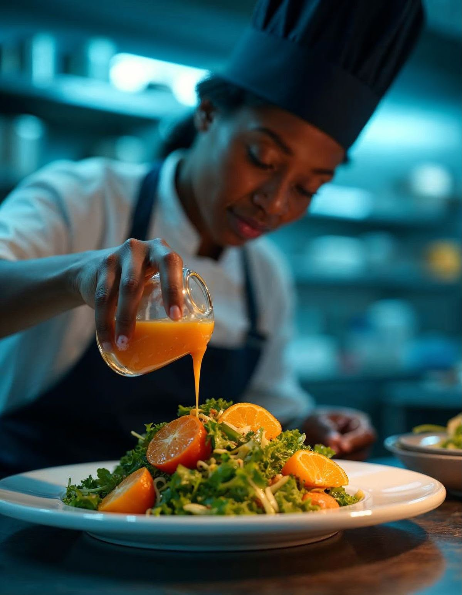

ABOUT SNE
A passion for food
rooted in tradition.
Sne Chonco grew up watching her grandmother transform simple ingredients into feasts that gathered family from across the province. That early wonder never left her. After training at the Capsicum Culinary Studio and honing her craft in kitchens across Johannesburg and London, she founded Sne's Gourmet Table in 2016.
Today, the studio specializes in bespoke menus that honour South Africa's rich culinary heritage while embracing global technique. Every event is treated as its own story — told through food.
Capsicum Culinary Graduate
Farm-to-Table Advocate